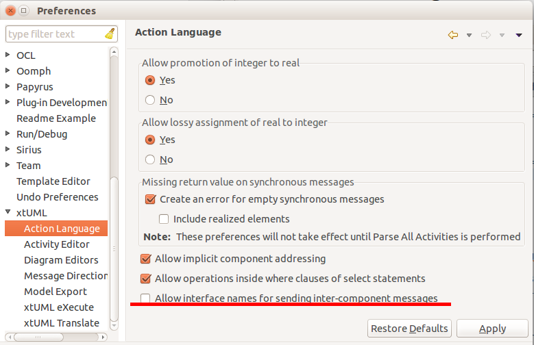

|
Move to Eclipse 4.5 |
BridgePoint has been upgraded to use Eclipse Mars as the underlying platform. This includes updates to the associated tools such as CDT, JDT, Egit, and others. For more details, check out the Eclipse Mars – New and Noteworthy page. |
|
OOA of OOA Removes Specialized Packages |
The xtUML metamodel (the OOA of OOA) has been cleaned of all classes that support specialized packages. The following classes are removed:
Any models that contain specialized packages will not be able to be opened with BridgePoint 5.2 and beyond. Users must first open these models in BridgePoint 5.0 to convert them to generic packages. Then they can be opened in BridgePoint 5.2. |
|
Parse All Activities Easily |
The “Parse All Activities” action may now be used on xtUML Projects. This makes it much easier for a user to parse activities in projects that contain many packages. |
|
Require Port Names in OAL |
A single component may provide or require the same interface multiple times. Every interface is exposed by a component through a uniquely named port. It is legal to send interface messages out of a component using either the interface name or port name, but using the interface name can easily be ambiguous whereas the port name cannot. BridgePoint now enforces a rule to use the port name. Usages of the interface name are flagged as OAL errors. We highly recommend changing application models that show the error to use the appropriate port name in place of an interface name. But since this may not be practical in some cases, the xtUML preferences include an option to allow interface names in OAL without flagging a parse error.  |
|
Integration with Papyrus-RT |
This release includes the Papyrus-RT UML modeling tools. The BridgePoint team created a video demonstration detailing how to interface a BridgePoint xtUML application with a Papyrus-RT application. |
|
GPS Watch Updates |
The GPS Watch example project has been extended:
|
|
|
|